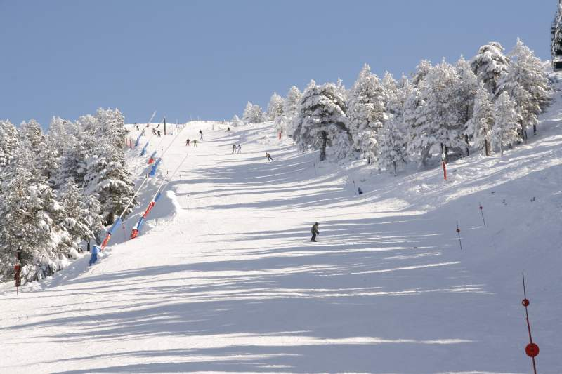

Javalambre
La estación de esquí de Javalambre, situada en la provincia de Teruel, es un destino ideal para aquellos que buscan disfrutar de la nieve en un ambiente tranquilo y familiar. Con más de 14 km de pistas esquiables, ofrece opciones tanto para principiantes como para esquiadores con experiencia. Además, su cercanía a grandes ciudades como Valencia la convierte en un punto de encuentro accesible para esquiadores de la región.
Javalambre es conocida por sus instalaciones modernas y bien mantenidas. La estación dispone de cañones de nieve artificial, lo que garantiza condiciones óptimas de esquí durante toda la temporada. También cuenta con pistas de varios niveles, lo que permite que tanto familias como grupos de amigos disfruten de la nieve a su propio ritmo.
Además de esquiar, Javalambre ofrece actividades adicionales, como áreas de trineos y espacios de recreación para niños, lo que la convierte en un lugar perfecto para todas las edades. La estación se complementa con servicios de alquiler de equipos, cafeterías y zonas de descanso, asegurando que los visitantes tengan una experiencia cómoda y memorable.
Aramón Javalambre
Dirección del lugar, Ejemplo, Huesca